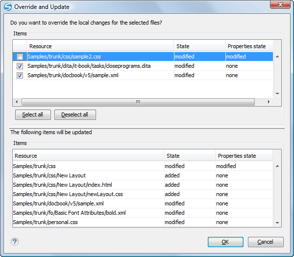

If you want to undo changes made in your working copy, since the last update, select the
items you are interested in, right-click to display the contextual menu and select
Revert. A dialog box will open that shows you the files and folders
that you have changed and can be reverted. Select those you want to revert and click the
OK button. Revert will undo only your local changes. It does not undo
any changes that have already been committed. If you choose to revert a conflicting item to
its pristine copy, then the eventual conflict is solved by losing your outgoing modifications.
If you try to revert a resource not under version control, the resource will be deleted from
the file system.
Note: By default, a directory will be recursively reverted (including any
other modified item it contains). However, if the directory has only property changes, you
need to explicitly choose if the operation will include any modified items found inside
it.
If you want some of your outgoing changes to be overridden you must first open the file in
Compare view and choose the
sections to be replaced with ones from the repository file. This can be achieved either by
editing directly the file or by using the action Copy change from right to
left from the Compare view
toolbar. After editing the conflicting file you have to run the action
Mark as merged before committing it.
If you want to drop all local changes and bring all incoming changes into your working copy
resource, you can use the Override and update action. It discards the
changes in the local file and updates it from the repository. A dialog box will display the
files that will be affected.
Figure 1. Override and Update Dialog Box

In the first table of the dialog box you will be able to see the resources that will be
overridden. In the second table you will find the list of resources that will be updated. Only
resources that have an incoming status are updated.
Tip: If you want to roll-back out of your working copy changes that have already
been committed to the repository, see Merge Revisions.